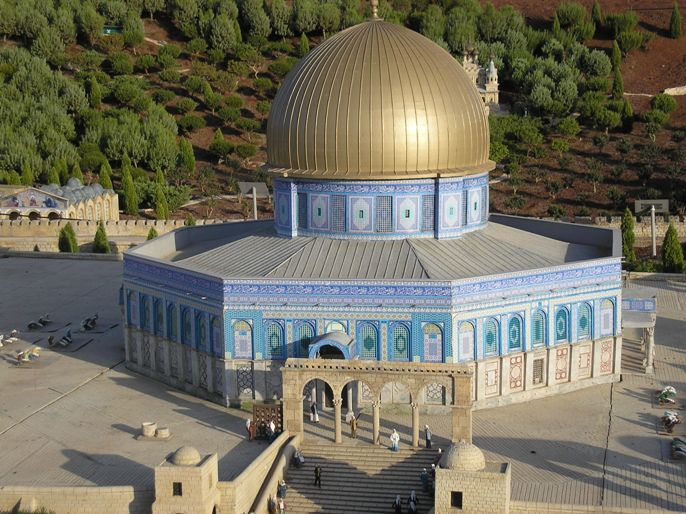
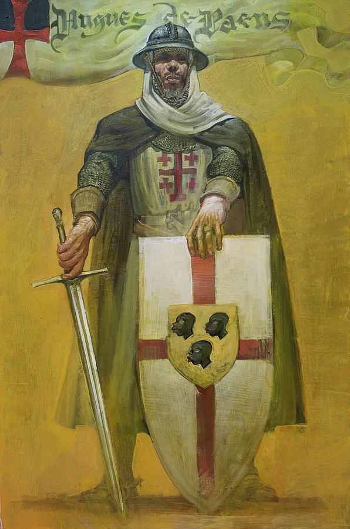

Templierii apar imediat după prima Cruciadă. În 1119, un nobil francez din regiunea Champagne, Hugues de Payens, împreună 8 cavaleri aleși
dintre rudele sale, a creat Ordinul Cavalerilor Templieri. Misiunea lor declarată era de a proteja pelerinii din Țara Sfântă. Cu acordul
regelui Baldvin al II-lea al Ierusalimului, și-au înființat sediul pe Muntele Templului, unde este acum Moscheea Al Aqsa.
Muntele Templului este sacru pentru Evrei, Creștini și pentru Musulmani, deoarece este o locație importantă în istorie. Se crede
că aici ar fi ruinele din Templul lui Solomon, unde s-ar fi ascuns inițial Sfântul Graal. Este o locație importantă și pentru musulmani.

Se spune că aici este piatra de pe care s-a ridicat la cer Mohamed, iar în secolul al VII-lea, Califul Abd al Malik a construit o
importantă moschee, Domul din Piatră. Cruciații au transformat-o în catedrală, numind-o "Templum Domini", și astfel și-au
luat numele de Templieri. Catedrala a devenit un model pentru catedralele Templierilor, precum Catedrala templului din Londra.
Nu se știu foarte multe despre activitatea ordinului din primi 9 ani. Dar în 1128 ei au devenit foarte cunoscuți în Europa.
Au început o campanie de strângere de fonduri, prin care solicitau bani, pământuri sau chiar pe fiii nobililor, pentru a se alătura ordinului.
Eforturile lor au fost susținute de un personaj proeminent din partea bisericii Bernard din Clairvaux (mai târziu a fost sanctificat),
el fiind nepotul unuia din cei 9 templieri care au format inițial Ordinul. În același an a avut loc Conciliul de la Troyes,
în urma căruia Ordinul a primit recunoașterea oficială. În 1130 Regele Aragonului din Spania a lăsat prin testament mari întinderi de pământ.
Donațiile au devenit o practica folosită de toți noii membri.
In 1139, Papa Inocențiu al II-lea a dat un ordin prin care Cavalerii Templieri deveneau și mai puternici. Acest ordin permitea Cavalerilor
Templieri să treacă liber granițele, să fie excluși de la plata taxelor, iar singura autoritate recunoscută rămânea doar Papa. Aceasta era o
confirmare a puterii lor, care se pare ca a fost susținută de patronul Ordinului, Bernard de Clairvaux, pentru că l-a ajutat pe Papa Inocențiu
să conducă biserica Catolică.